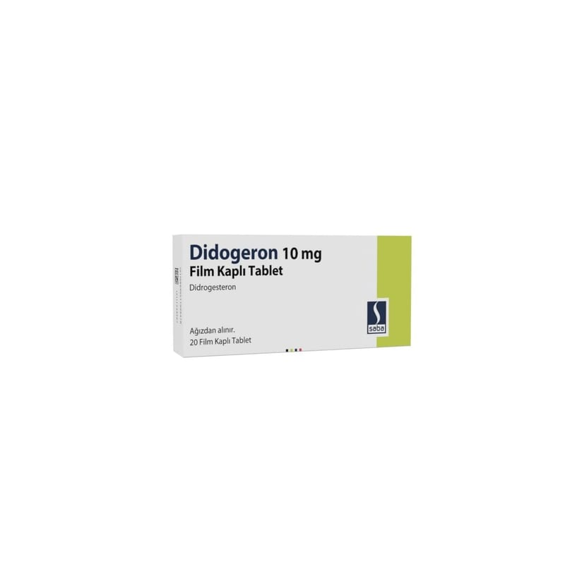

Didogeron 10 mg Film Kaplı Tablet (20 adet)

Ne için kullanılır
KT · Bölüm 1DİDOGERON her biri 10 mg didrogesteron içeren, beyaz veya beyazımsı renkli, yuvarlak, bikonveks çentikli, bir yüzü düz film kaplı tabletlerdir. 20 tabletlik ambalajlarda sunulmaktadır.
DİDOGERON
didrogesteron etkin maddesini içermektedir. Didrogesteron, kadınlık hormonu denilen progesteron hormonudur. Didrogesteron vücudunuz tarafından üretilen ‘progesteron’ hormonu ile hemen hemen aynı etkiye sahiptir ve bir diğer kadınlık hormonu olan östrojen ile birlikte adet döngüsünü düzenler. Bu ilacı kullanmaya başlamadan önce bu KULLANMA TALİMATINI dikkatlice okuyunuz, çünkü sizin için önemli bilgiler içermektedir. Bu kullanma talimatını saklayınız. Daha sonra tekrar okumaya ihtiyaç duyabilirsiniz. Eğer ilave sorularınız olursa, lütfen doktorunuza veya eczacınıza danışınız. Bu ilaç kişisel olarak sizin için reçete edilmiştir, başkalarına vermeyiniz. Bu ilacın kullanımı sırasında, doktora veya hastaneye gittiğinizde doktorunuza bu ilacı kullandığınızı söyleyiniz. Bu talimatta yazılanlara aynen uyunuz. İlaç hakkında size önerilen dozun dışında yüksek veya düşük doz kullanmayınız.
DİDOGERON
aşağıdaki durumlarda kullanılır:
Vücudunuz yeterli progesteronu üretmediğinde karşılaşabileceğiniz aşağıdaki gibi problemler için: - Düzensiz adet dönemlerinin kontrolü için - Endometriyozis – rahmin içindeki dokunun rahim dışında gelişmesi - Ağrılı adet dönemleri - Düşük seviyede progesterondan kaynaklanan infertilite (kısırlık) - İnfertilite (kısırlık) tedavileri sırasında uyarılan döngülerin bir parçası olarak luteal destek - Düşük tehdidi riskini azaltmak için veya geçmişte tekrarlayan düşük yaptıysanız - Pre-menstrual sendrom (PMS) (Adet öncesi oluşan rahatsızlık verici belirtilerin tedavisinde)
Hormon Replasman Tedavisi (HRT- kadınlık hormanları ile tedavi) DİDOGERON
ayrıca aşağıdaki durumlarda östrojen ile birlikte kullanılır: - Menopoz (adet görmenin durduğu dönem) tedavisi sırasında rahmin içindeki dokuda meydana gelen anormallikleri önlemek için - Menopoza girmeden önce adet dönemleriniz durduysa - Olağandışı ağır ve/veya düzensiz adet dönemleri
Vücudunuz, normal olarak doğal hormonlar olan progesteron ve östrojen miktarını dengelemektedir. Vücudunuz yeterli progesteron üretmezse, DİDOGERON
bunu telafi etmektedir ve dengeyi yeniden sağlamaktadır.
Doktorunuz, DİDOGERON’un yanı sıra östrojen almanızı da isteyebilir. Bu, DİDOGERON’u ne sebeple alıyor olduğunuza bağlıdır.
HRT kullanan bazı kadınlarda, sadece bir östrojenin alınması, rahim iç dokusunda anormal bir kalınlaşmaya sebep olabilir. Rahminiz alınmışsa veya endometriyozis geçmişiniz var ise, aynı durum mevcut olabilir. Aylık adet döngünüzün bir kısmında DİDOGERON
almak, rahim iç dokusunun kalınlaşmasını engellemeye yardım etmektedir.